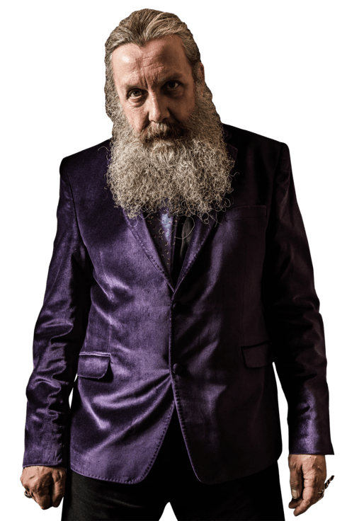
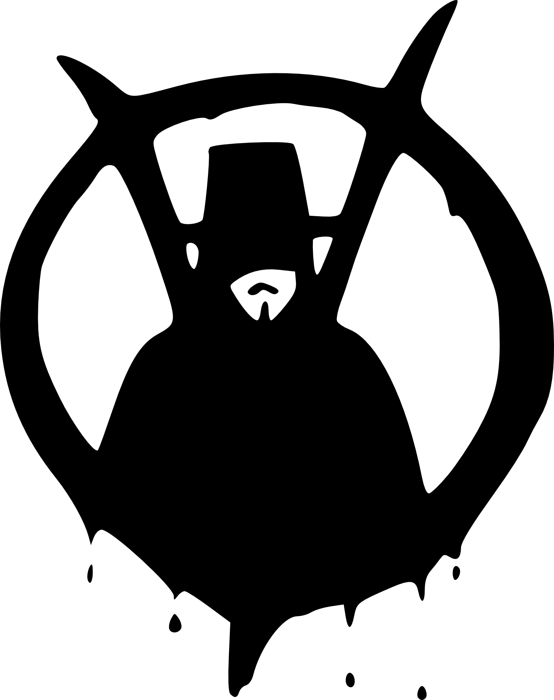

<section class="footer">
    <div class="container">
      <div class="footer__inner">
        <div class="footer__bio">
            
          <div class="footer__bio-title">About Alan Moore</div>
          <div class="footer__bio-text">
            <article>
                Alan Moore (born 18 November 1953) is an English author known primarily for his work in comic books. He is widely recognised among his
                peers and critics as one of the best comic book writers in the English language. Moore has occasionally used such pseudonyms as Curt Vile,
                Jill de Ray, Brilburn Logue, and Translucia Baboon; also, reprints of some of his work have been credited to The Original Writer when
                Moore requested that his name be removed.
            </article>
          </div>
          <div class="footer__bio-location">Northampton, United Kingdom</div>
        </div>

          

        <div class="footer__col">
          <div class="footer__col-title">Social links</div>
          <ul class="footer__social-link">
            <li><a title="facebook" href="#" style="background-image: url(img/content/Layer\ 232.png);"></a></li>
            <li><a title="youtube" href="#" style="background-image: url(img/content/Layer\ 234.png);"></a></li>
            <li><a title="linkedin" href="#" style="background-image: url(img/content/Layer\ 236.png);"></a></li>
          </ul>
          <div class="footer__form">
            <div class="footer__form-title">Subscribe</div>
            <form>
              <input type="text" placeholder="E-Mail Address" />
              <button type="submit"></button>
            </form>
          </div>
        </div>
        
      </div>
      <div class="footer__copy">
        <div class="footer__copy-text">&copy 2023. Trademarks and brands are the property of their respective owners</div>
    </div>
    </div>
</section>
